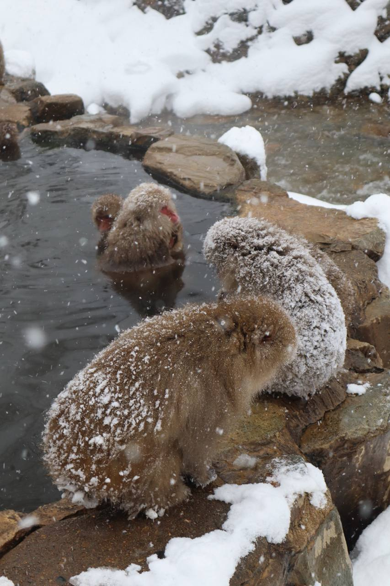

Snow monkeys are an iconic species in Japan, and this scene can't be seen in Singapore. Capturing these snow monkey's moment in a hot spring is one such memory worth preserving.

The mountain’s appearance changes dramatically with the seasons. I captured this in winter, therefore it is snow-covered. Mount Fuji is a landmark that create lasting memories for my trip to Japan

Capturing children in their school uniforms in Japan evoke nostalgic and playful memories, especially reminded me of Shinchan

The blue sky contrasts beautifully with the warm tones of the temple, highlighting its architecture and structure. The sharp contrast between the two elements can create a visually pleasing composition.